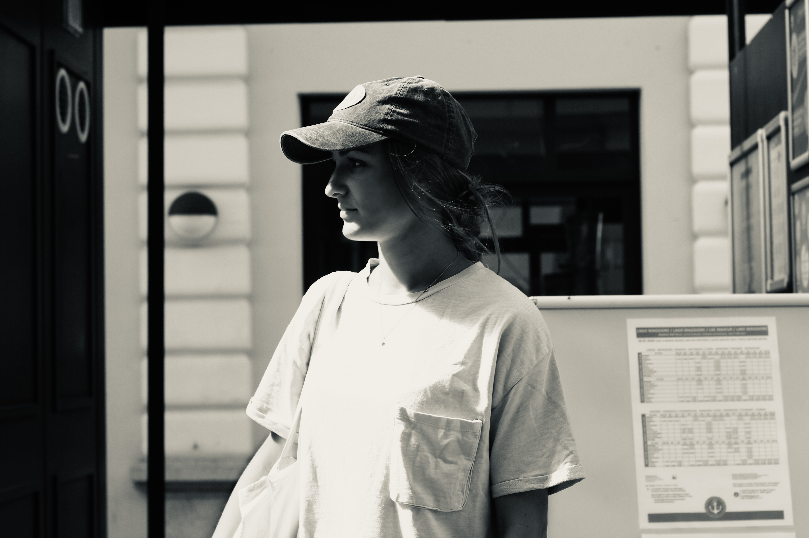

Switzerland & U.S.A
24.10.1997
Brand and event professional with a passion for creating experiences that connect people with brands. Based in Zurich, I specialise in managing large-scale live activations and brand campaigns for major Swiss clients – including Migros' presence at 10+ of Switzerland's most iconic music festivals.
With a background in multimedia production, design and strategic communication, I bring both creative vision and operational precision to every project – from first briefing to final execution. I lead cross-functional teams, manage client relationships end-to-end and take full ownership of results.
Driven by a passion for brands that inspire and move people.
Occupational activities
School education
Hobbies & Activities
Figure Skat | Surf | Snowboard | Ski | Soccer | Sports in General | Travel | Music | Playing Guitar | Photography | Image Editing | Graphics | Design | Attention to Detail | Keeping in touch with Family & Friends